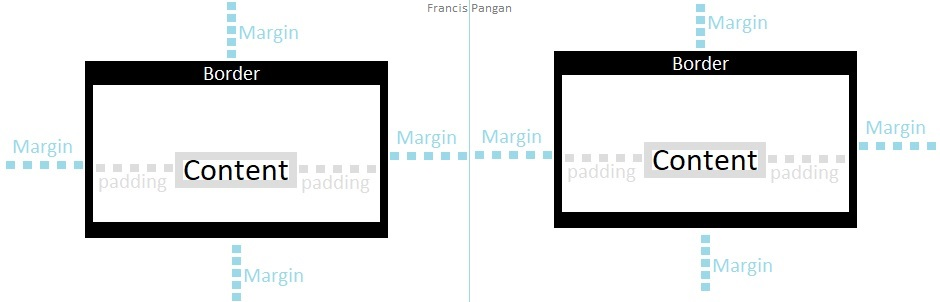

Hello, my imaginary, non-technical friend! I haven't seen you in like foreverrrr!
Welcome to my Tech blog. The Dev academy peeps done told me to research ONE of the following topics:
I'm here to teach you a little bit about CSS. The topic for today is...(drumroll)
A webpage's basic structure is that it's made up of boxes. Boxes inside boxes, nestled within boxes, beside other boxes... it's boxes all the way down. You can specify the size of these boxes, and the content inside them, by using Margins, Borders. and Paddings.
Let's talk about Contents real quick before we jump into Borders. When you add anything to your webpage, be it text, a picture, or anything else, this is known as the Content. Now your content will have boundaries (remember the boxes?). These boundaries are your Border. Simple. You can order your CSS to apply style to your border, and define the color, how thick you want it to be, whether you want it to be solid, dashed, or any other style, etc.
Now that we've defined borders, let's look at Paddings. A padding is the space between your content and the border. This space is transparent.
Finally, Margins. This is the space between your border and other margins. Same as Paddings, Margins are transparent.
I created a small image to depict how these three work together:
More information here.